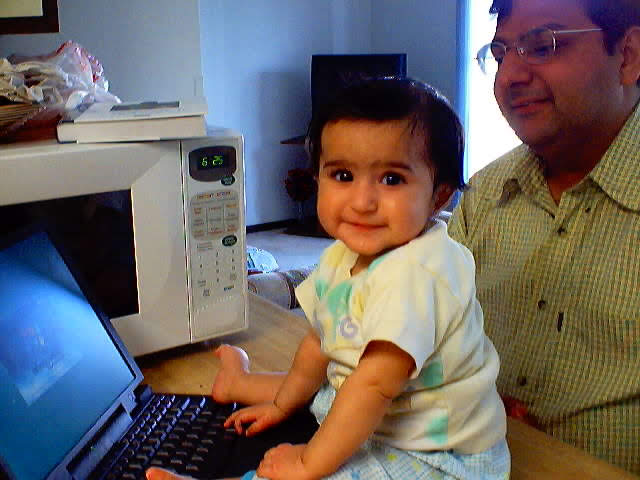
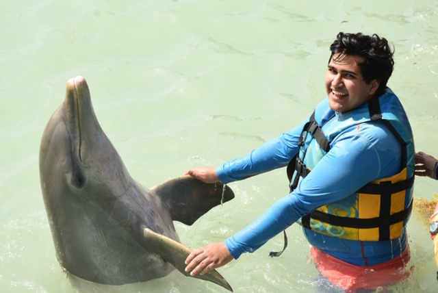

Special Skills Data Sheet
Downloadable version of this Data SheetInnovative Mindset
- I have been interested in technology ever since I was a toddler, when my dad bought our first family computer. As I grew older, my passion for technology only grew, from computers to smart homes, to robots, and everything in between. I love reading about new technology and working to learn the new methods as they rise in popularity. I am currently learning Python Programming and Machine Learning through online courses. My innovate mindset will help me adapt to any future technology that arises to assist quants, such as artificial intelligence through machine learning.
Critical Thinking and Decision Making
- As a leader in many organizations, I have been placed in many situations where a spontaneous decision by me will decide the success of an idea. By being placed in a lot of these situations, I have adhered to coming up with creative and successful spontaneous decisions after quickly analyzing the circumstances for any conflict. This skill is highly anticipated for all successful quants to have. Being able to make logical decisions spontaneously can help make everyday work go a lot faster/smoother, which leads to a greater production output.
Competitive Drive
- Competition spurs me to innovate, not quit. I thrive in competitive environments, as I am able to compare others work to mine, and work to make mine better. My competitive spirit allows me to not only work well as an individual, but also successfully motivate group work and mentorship. A main aspect about working as a quant is to compete with other quants to find the alpha. My ability to induce competition will greatly help motivate me to always find the alpha first.
Time Management
- I am very time oriented, as I must complete my tasks within a scheduled time. I will complete any task before its due, sometimes finishing projects the day it was assigned. I also don’t show up late for any meetings, rather always showing up at least five minutes early. I also assist my peers in managing their time; analyzing their work behaviors and making scheduled plans for them. My time management skills will come in perfect use during long work hours as a quant, so I can be efficient while I work and have time left over for personal interests.
Optimistic Personality
- I have a self-motto: Always Smile. Even though a setback occurs, I build up the courage to push through and continue whatever task I was pursuing. I am a strong advocate for spreading positivity, as I make it a goal to smile to anyone who needs someone to brighten up their day. Self-motivation is what drives quants to keep working as a quant. The high volatility of the stock market can’t be avoided, and many times the hours of work a quant does can all go to waste with a receding market. Thus, quants must stay optimistic towards their work.

